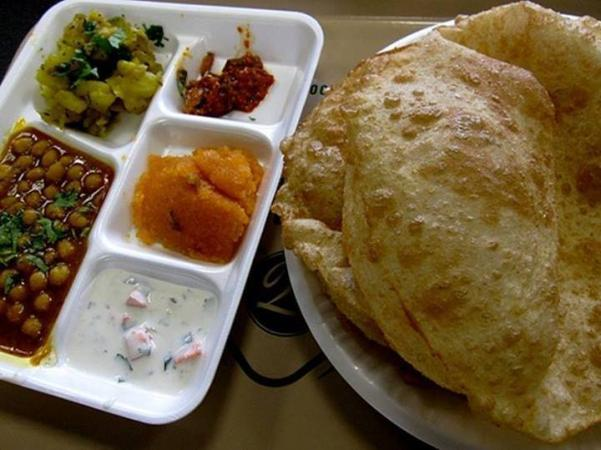

Halwa Puri Aur Cholay Ka Salan
Recipe by Chef Mah Rukh

Ingredients
Puri
- Flour 2 cups (Makes about 20)
- Oil 2 tsp
- Oil for deep frying
Aalo Ki Bhujia
- Medium size potato 1
- Salt to tste
- Chili powder 1/2 tsp
- Haldi powder 1/4 tsp
- Kalonji seeds 1/2 tsp
Cholay
- Presoaked whole channa 1/2 cup
- Salt to taste
- Zeera powder 1/2 tsp
- Crushed whole dried red chilies 1/2 tsp
- Haldi powder 1/4 tsp
Halwa
- Sujji (semolina) 1 cup
- Oil 2 tsp
- Sugar 1-1/2 cup
- Water 1/2 cup
- Seeds of small illaichi 3
- Yellow food color (optional)
Instructions
Poori
- Make the dough with flour and 2 tsp oil and water as needed.
- Make into small puris (panaka like)as flat as you can and deep fry in hot oil.
Aaloo Ki Bhujia
- Cut the potatos into small cubes.
- Add spices and 1 cup of water and leave on low heat.
- When soft,mash lightly.
Cholay
- Boil the channa with salt until soft.
- In apot heat 1tbs of oil.
- Addspices and softened channa and 1/4 cup of water.
- Mix and mash slightly.
- Cook till bubbles appear then remove from heart.
Halwa
- Put the sujji and oil in a pot along with illaichi seeds and fryuntil slightly brown on ver low heat.
- Mean while combine sugar and water to make a syrup.
- Add this to the sujji taking cre not to burn yourself and cook on low heat to desired consistency.
- If you want to color the halwa add the color to the syrup before pouring it into the sujji.